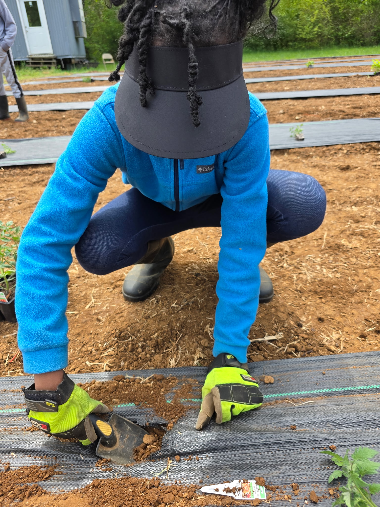

Belonging
Children are met with dignity, care, and patience.

Rooted in Care. Rising in Purpose.
HaveiHope creates relationship-centered programs that help children grow through literacy, hands-on learning, community service, and mentorship.
About Us
HaveiHope is a nonprofit concept focused on creating safe, nurturing, and practical learning environments for under-resourced children. The goal is to support the whole child through education, mentorship, agriculture, stewardship, and service.
Our work is built around helping children feel known, supported, and equipped to grow into confident, compassionate, and capable individuals.

Our Values
Children are met with dignity, care, and patience.
We support emotional, academic, physical, and spiritual development.
Children learn responsibility through service and shared investment.
Through farm-based learning and mentorship, HaveiHope helps children build confidence, responsibility, and purpose.